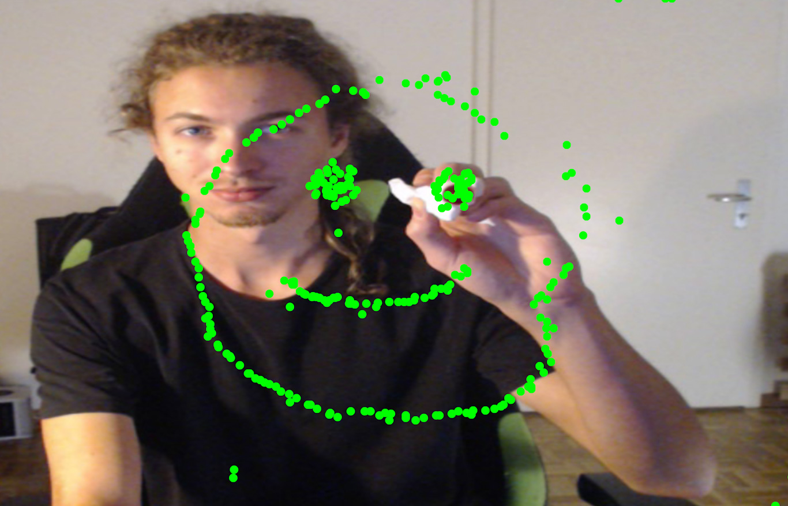
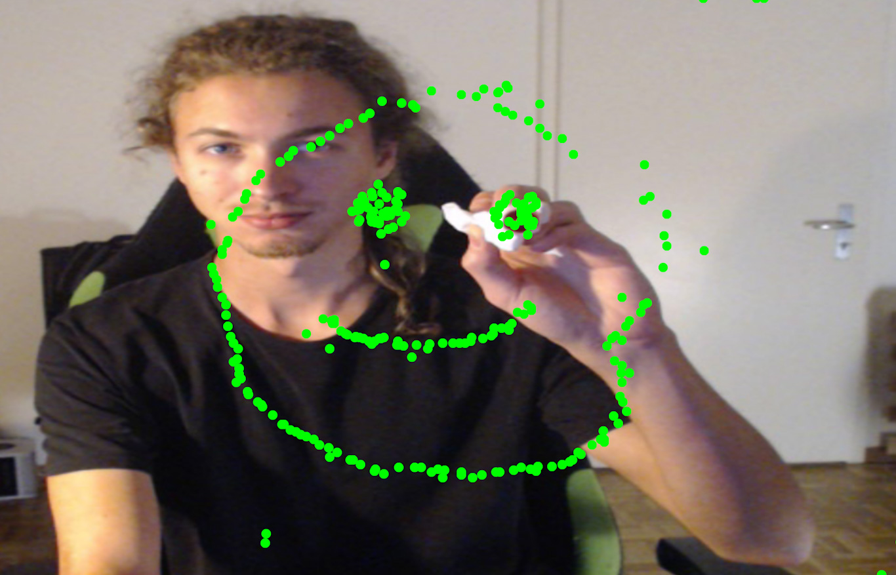

GENCG Working Journal - Day 4 - Drawing Machine
Also your PC might struggle on this page because the calculation are
quite heavy on your CPU. All sketches are embedded via IFrames and are
all loaded and processed simultaneously.
If you encounter too much lag, consider using the provided links to
the individual sketches!
Show me!
// the rgba values of each pixel
let r = camInput.pixels[loc];
let g = camInput.pixels[loc + 1];
let b = camInput.pixels[loc + 2];
let a = camInput.pixels[loc + 3];
// a color object provided by the p5 library
let c = color(r, g, b, a);
// here i check the brightness of the pixel
let bright = brightness(c);
// i save a position reference to the brightest pixel
if (bright > brightestValue) {
brightestValue = bright;
brightestPixelIndex = loc;
xPos = map(x, 0, width / rasterizeDivider, width, 0);
yPos = map(y, 0, height / rasterizeDivider, 0, height);
}
You can reset the drawing by clicking on the canvas and then pressing
R on your keyboard.
// RGB values of the pixel
let r = camInput.pixels[loc];
let g = camInput.pixels[loc + 1];
let b = camInput.pixels[loc + 2];
// instead of checking for brightness, I check for the purest red since white also has a red value of 255
if (r > rMax && g < gMin && b < bMin) {
rMax = r;
gMin = g;
bMin = b;
xPos = map(x, 0, width / rasterizeDivider, width, 0);
yPos = map(y, 0, height / rasterizeDivider, 0, height);
}
Show me!
// draw 10 circles increasing in size by index
for (let i = 0; i < 10; i++) {
noFill();
// decrease the strokeWeight according to the index
strokeWeight(map(i, 0, 9, 15, 2));
// map colors and alpha to position and index parameters
let r = map(random(xPos_target - 100, xPos_target + 100), 0, width, 0, 255);
let g = map(random(yPos_target - 100, yPos_target + 100), 0, height, 0, 255);
let b = random(0, 255);
let alpha = map(i, 0, 9, 100, 10);
stroke(r, g, b, alpha);
let elipseWidth = map(i, 0, 9, 10, 400);
ellipse(
xPos_target,
yPos_target,
// create a 3D rotating effect by calculating width and height with sine / cosine
elipseWidth * sin(millis() / 1000),
elipseWidth * cos(millis() / 1000)
);
}
 
